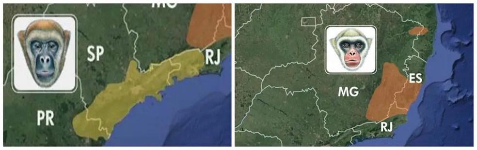

Bem-vindo ao Projeto Salve o Muriqui
O Muriqui-do-Norte está criticamente ameaçado de extinção. Nosso projeto busca conscientizar e preservar essa espécie única da Mata Atlântica.
Nome da Espécie
Nome Científico: Brachyteles hypoxanthus
Nome Comum: Muriqui-do-Norte
Distribuição Geográfica
O Muriqui-do-Norte é encontrado em fragmentos florestais da Mata Atlântica nos estados de Minas Gerais, Espírito Santo e Bahia.
Hábitos Alimentares
O Muriqui-do-Norte se alimenta principalmente de frutas, folhas, flores e brotos encontrados nas copas das árvores.
Causas da Ameaça de Extinção
- Destruição do habitat devido ao desmatamento da Mata Atlântica.
- Fragmentação florestal que isola as populações.
- Caça, embora não seja uma espécie alvo principal.
Formas de Preservação e Conservação
- Proteção das florestas e criação de unidades de conservação.
- Programas de reintrodução em áreas onde foram extintos.
- Educação e conscientização das comunidades locais.
Depoimentos
"Proteger o Muriqui é proteger a nossa herança natural. Todos nós somos responsáveis por manter essa espécie incrível viva." – Maria Silva, Bióloga.
"Ver o Muriqui em seu habitat natural é uma experiência que nos faz valorizar ainda mais a importância da preservação." – João Pereira, Fotógrafo de Vida Selvagem.